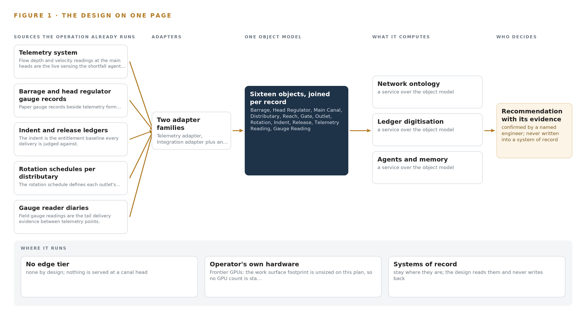
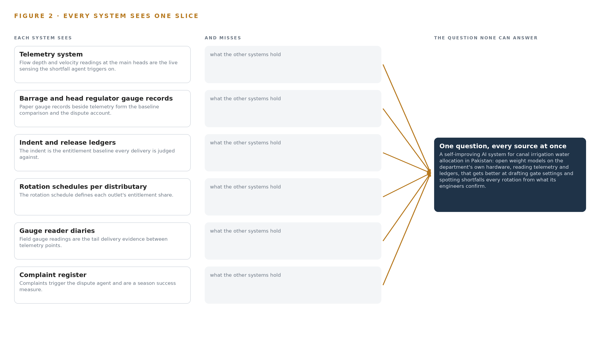
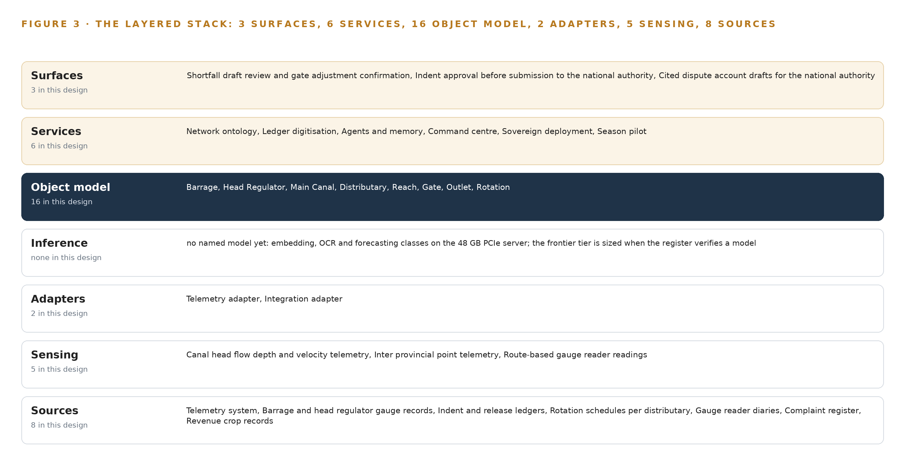
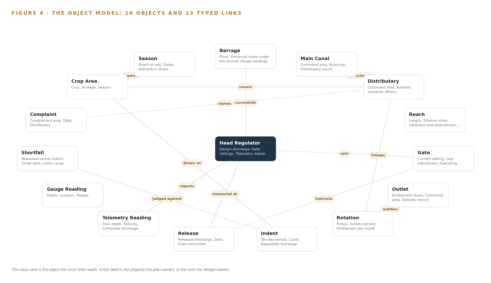
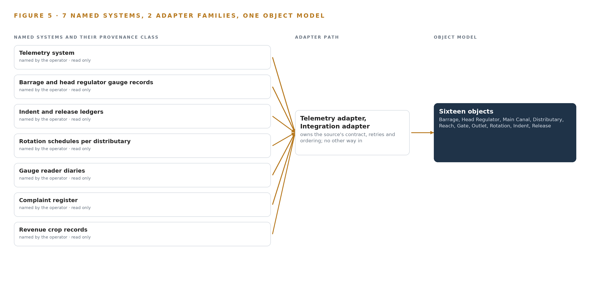
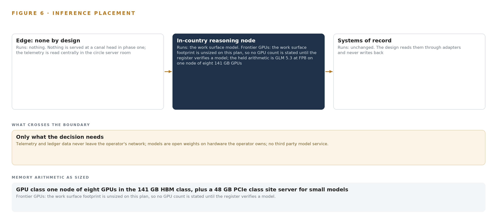
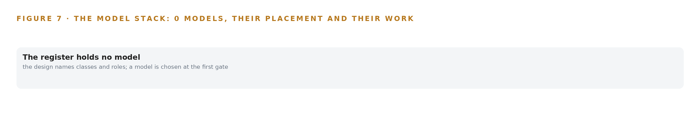
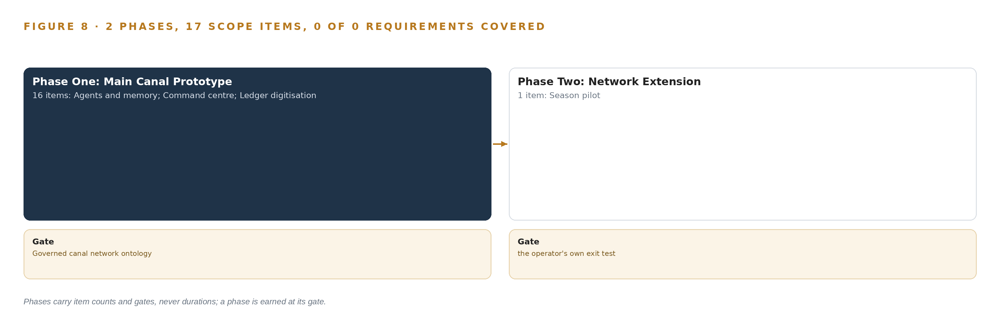
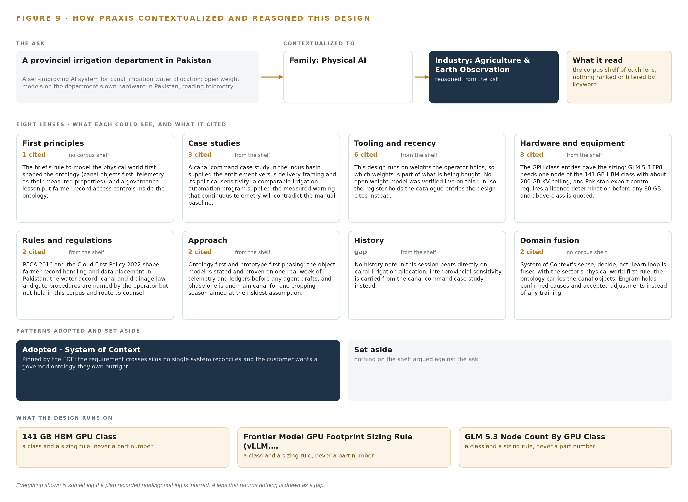

A Self-Improving AI System for Canal Irrigation Water Allocation in Pakistan
Canal Share Ledger: Ontologies for Canal Water Allocation Across the Rotation
For the officer accountable for canal water allocation, the divisional and subdivisional engineers who set indents and gates, and the data, ontology and platform engineers who would build and run it.
Vertical-Driven Architectures is a CodeNinja series of system designs. Every design in the series is driven by a real-world problem and scenario in a single industry, and every one is designed on Praxis, CodeNinja's platform for designing physical AI systems. Operations are described by class, never by name.
A Self-Improving AI System for Canal Irrigation Water Allocation in Pakistan
What this is. An open reference architecture for a self-improving AI system in physical AI, built for a provincial irrigation department in Pakistan that takes its share of river water at barrages and head regulators and delivers it through a main canal, distributaries and minors to outlets farmers share by rotation, where owning the inference hardware that runs it costs about 636,000 US dollars over three years. When a head regulator reading drops below its indent for three days at peak demand, the design joins the telemetry, the indent and release ledgers, the rotation schedule, the gauge reader's diary, the complaint register and the revenue crop records into one entitlement versus delivery argument, so the divisional engineer sees which reach is silted, which branch is over drawing and which gate adjustment cured the matching shortfall last season. Every model runs on the department's own hardware inside Pakistan under the inter provincial water accord, canal and drainage law, the national data rules for farmer records and export control on the GPU node. It is written for the officer accountable for canal water allocation, the divisional and subdivisional engineers who set indents and gates, and the data, ontology and platform engineers who would build and run it. The operator is described by class, never by name.
The answer in numbers.
| Part | The design |
|---|---|
| Sources | Eight read only systems of record, entering through two adapter families (a telemetry adapter doing a direct historian read, and an integration adapter running an OCR pipeline with a human verification stage and a 2 percent failure gate on every batch) that stamp every item with its source, adapter, timestamp and verification state: the telemetry system, the barrage and head regulator gauge records, the indent and release ledgers, the rotation schedules per distributary, the gauge reader diaries, the complaint register and the revenue crop records among them; the platform never operates a gate and never writes into a system of record |
| Object model | 16 typed objects with 13 typed links, from the barrage, head regulator, main canal, distributary, reach, gate and outlet through the rotation, shortfall and season to the indent, release, complaint and crop area, with the telemetry reading and gauge reading as measures, built as a projection over the systems of record and published as JSON for reuse |
| Models | Frontier class open weights for the three drafting agents (shortfall, indent and dispute) and the command centre, self hosted for sovereignty; the operator names GLM 5.3 and the plan holds its FP8 arithmetic, but no weights are committed until the register verifies a model live; embedding, OCR and forecasting model classes for retrieval, handwritten Urdu and English ledgers and shortfall detection; no third party model service, nothing trained into weights |
| Compute | One node of eight 141 GB HBM cards (about 1,128 GB) in the department's circle server room, the held arithmetic for about 756 GB of FP8 weights, beside a 48 GB PCIe class site server for the small model tier; no edge tier, nothing served at a canal head. The node sits above the US advanced computing export threshold for a D:2, D:3 and D:4 destination, so the export licence determination runs first in phase one with an in country procurement route or colocation fallback named before any order |
| Rollout | Two phases carrying 17 scope items (16 and 1), each closed by a gate, never a date: a main canal prototype whose gate is the governed canal network ontology reconciled against one real week of telemetry and ledgers before any agent drafts, one main canal and its distributaries live for one cropping season, then extension to the other canals; baselines reconciled in the first month, headline measure the percent of tail outlets receiving their rotation share, nominal 85 percent, with days from shortfall onset to correction and complaints per distributary beside it |
| Three-year cost | About 636,000 US dollars to own the frontier node and the site server for three years (a range of 606,000 to 662,000: servers, support and power at the national uniform tariff), against about 773,000 to rent the same eight 141 GB cards and one 48 GB card on the deepest three year commitment in AWS Asia Pacific (Mumbai), so ownership costs about four fifths of it, and about 2.05 million on demand, against which ownership costs a little under a third. Renting is a price reference only, because AWS lists no region in Pakistan and every rented option would carry telemetry and ledgers across the border; the frontier footprint itself stands only when the register verifies a model (Appendix A) |
| Human control | Agents draft and people decide, by name: the controlling engineer confirms or rejects the drafted cause and correction before any gate instruction is drafted, the indent draft is approved before it goes to the national authority, and the dispute account is drafted from cited records for the officer to send; the gate stays a hand operation on telephone instructions, and every confirmed cause and accepted adjustment is kept as memory the next season reads |
Reuse it. The object model, the model register and the figures are free to reuse under CC BY 4.0. Cite as https://codeatoms.ai/canal-irrigation-pakistan/.
Made with. Reasoned on [CodeNinja Praxis](https://codeatoms.ai/praxis/), the CodeNinja Atoms platform for designing physical AI systems. The object model imports into [Hyper Ontology](https://codeatoms.ai/hyper-ontology/), which turns it into a living system. Load it with the [hyper-ontology loader](../hyper-ontology-py/): `hyper-ontology show canal-irrigation-pakistan`. Both are in beta; access by request.
A Shortfall Should Surface Within the Rotation, Not After the Complaint
A provincial irrigation department in Pakistan needs one question answered continuously, and the self-improving AI system it asked for exists to answer it: did every distributary on the main canal receive its entitlement share this rotation, and if not, where, why and what should be done about it. It cannot answer the question today because the answer lives in pieces no system joins: telemetry measures what arrived at the main heads within minutes, the indent and release ledgers state what was asked for and released, the gauge reader diaries record what the field saw, and the complaint register is the first signal that a tail has gone short, usually after the crop is lost. This is the problem ontologies for canal water allocation exist to solve, and in the Indus basin it is politically sensitive, because inter provincial water is contested and the same shortfalls recur every season at the same tails.
The design is a sovereign, self-improving allocation system for one main canal in its first season: eight source systems, two adapter families, a governed ontology of sixteen objects with typed links, six services, three surfaces and three drafting agents for shortfall, indent and dispute, each confirmed by a named engineer. Telemetry enters through a historian read and every paper source through an OCR pipeline with a human verification stage; together they feed one object model that is a projection over the systems of record, never a replacement of them. Improvement runs through memory rather than training: confirmed causes and accepted adjustments compound season over season, so the tails get their share more often without any model being trained on the fly. Everything runs on the operator's own hardware inside Pakistan, in the circle server room, with frontier-class open weights self-hosted for sovereignty; the model register stands open, with no weights committed until a model is verified live, and nothing about the canals leaves the country.
The paper covers the industry problem and the join failure across the existing systems, the constraints and scoping decisions, the stack, the object model, ingestion, inference placement, the open model register, the rollout in two phases carrying seventeen items with their gates and measurements, and ownership of what the system builds. It closes with the chapter that shows how Praxis, the platform the design was produced on, contextualized and reasoned it.

Contents
Each chapter is tagged for the reader it serves most directly: Executive, Team Lead, FDE, Reference.
| Abstract · A Shortfall Should Surface Within the Rotation, Not After the Complaint | Executive | |
| PART I · THE PROBLEM | ||
| 1 | Ontologies for Canal Water Allocation Begin at the Tail | Executive |
| 2 | Every System Sees One Slice of the Canal | ExecutiveTeam Lead |
| PART II · THE DESIGN | ||
| 3 | Sovereignty and Memory Shape Every Choice Downstream | Team Lead |
| 4 | One Stack Runs From Paper Ledgers to Draft Settings | Team LeadFDE |
| 5 | Sixteen Objects Turn Canal Records Into One Argument | FDE |
| 6 | Every Source Enters Through an Adapter, Never Directly | FDE |
| 7 | All Inference Stays Inside the Circle Server Room | FDE |
| 8 | No Weights Are Committed Until the Register Verifies | FDEExecutive |
| PART III · THE ROLLOUT | ||
| 9 | One Season on One Main Before Any Extension | Team LeadExecutive |
| 10 | The Intelligence Stays with the Canal Operator | Executive |
| PART IV · HOW IT WAS DESIGNED | ||
| Conclusion · Fair on Paper Becomes Measured in the Field | Executive | |
| 11 | How Praxis Contextualized and Reasoned This Design | Team LeadFDE |
| Sources | Reference | |
Ontologies for Canal Water Allocation Begin at the Tail
A distributary at the tail loses its share for weeks before any complaint arrives, because no system joins what was indented, what was released and what the gauge reader wrote.
The abstract put the whole design on one page: a sovereign, self-improving AI system for water allocation on one main canal in its first season. This chapter starts where the operator feels the problem, at the tail of a distributary, and works back to the question no ledger can answer alone.
1.1 The Question, the Data and the Rules It Must Satisfy
The operation needs one question answered every rotation, for every distributary on the main: did it receive its entitlement share, and if it did not, since when, and why. Answering it requires data that today lives in seven separate places: telemetry readings of flow depth and velocity at the main heads, the indent submitted ten days ahead, the release recorded against that indent, the rotation schedule that fixes each outlet's share, the gauge reader's diary entry from the field, the complaint if one was ever filed, and the revenue department's crop and area record that explains what the water was for. Four regimes govern the answer. The interprovincial accord sets each province's share of river water, and the national authority administers it. Canal and drainage law, with the department's own gate operating procedures, governs how water may be moved and who may move it. National cybersecurity and data placement controls decide where records may be held and who may read anything that touches a named farmer, which constrains the system before a single pipeline is drawn.
1.2 What the Shortfall Costs
The cost is stated plainly in the operator's own words: a distributary at the tail receives less than its share for weeks before a complaint arrives, and by then the crop is lost. Around that core loss sit three more. When the national authority or a farmers' body disputes a figure, the answer is assembled from paper ledgers by hand. The same shortfalls recur every season at the same tails, because no confirmed cause survives from one season to the next. And the experience that sets gates lives with a few divisional engineers who move posts every few years, so the department's judgment walks out of the building on a transfer order. The pattern has a documented analogue in the earth observation literature: a peer reviewed study of coordinated planning for heterogeneous observation resources found that satellites, airships and unmanned aerial vehicles are usually managed by different operators, which complicates any coordinated plan across them (DOI 2015). The operator's canals are the same failure one level down, with ledgers, diaries and telemetry in place of aircraft.
1.3 The Operation as a Scenario
The operator is a provincial irrigation department in Pakistan, running a canal network that serves millions of farmers. It takes its share of river water at barrages and head regulators and moves it through the main, branches, distributaries and minors to outlets that farmers share by rotation. Telemetry was installed on the mains after a national research program handed it over, and it now sends flow depth and velocity readings every few minutes from the main heads and some interprovincial points. Seven named systems of record hold the operation's memory: the telemetry system, the barrage and head regulator gauge records, the indent and release ledgers, the rotation schedules per distributary, the gauge reader diaries, the complaint register and the revenue crop records. Four roles sit in the loop: the divisional engineers who set gates by hand on telephone instructions and move posts every few years, the gauge readers who walk fixed routes with paper diaries, the national authority that sets the provincial share, and the farmers' bodies that dispute figures when a season goes wrong. The physical environments run from barrage decks and head regulators to canal banks, field routes and one circle server room where the department's compute already sits. The regulatory ground is the interprovincial accord, canal and drainage law, the department's gate procedures, and the national controls on data and cybersecurity, all of which the design must satisfy rather than route around.
Every System Sees One Slice of the Canal
Telemetry, ledgers, diaries, complaints and crop records each hold one slice of the network, and none of them alone can say whether a distributary received its entitlement.
Chapter 1 set out the question. This chapter explains why no system the operation already runs can answer it.
2.1 What Each System Sees
Telemetry system flow depth and velocity readings at the main heads are the live sensing the shortfall agent triggers on.
Barrage and head regulator gauge records paper gauge records beside telemetry form the baseline comparison and the dispute account.
Indent and release ledgers the indent is the entitlement baseline every delivery is judged against.
Rotation schedules per distributary the rotation schedule defines each outlet's entitlement share.
Gauge reader diaries field gauge readings are the tail delivery evidence between telemetry points.
Complaint register complaints trigger the dispute agent and are a season success measure.

2.2 What None of Them See Together
Each holds one slice, and the question needs all of them in one place at once, which today is done by hand at the cadence of whoever has the time.
Sovereignty and Memory Shape Every Choice Downstream
Open weights on the operator's own hardware in Pakistan, no gate actuation, no training on the fly and no replacement of systems of record together fix the shape of everything the design builds.
Chapter 2 showed that each system sees one slice and none can join them. This chapter states the goals that fix the shape of everything the design builds, and the decisions and rejections those goals force.
3.1 Nothing About the Canals Leaves the Country
The operator requires open weight models on its own hardware in Pakistan, no third party model service, and telemetry and ledger data that never leave its network. This is hard in this industry for three reasons. Shortfall and dispute figures are politically sensitive in the Indus basin, where interprovincial water is contested, so any egress path is a governance risk, not merely a technical one. National cybersecurity and data placement controls constrain where farmer-linked records may sit and who may read them. And the GPU class the frontier tier needs sits above the US advanced computing export threshold for Pakistan, so an export license determination must precede any quotation of a GPU class, with an in-country procurement route or colocation named as the fallback before any order is placed.
3.2 A Named Engineer Keeps the Hand on the Gate
No agent operates a gate. Agents draft gate settings and shortfall corrections, a named engineer confirms or rejects them, and the gate itself remains a hand operation on telephone instructions under the department's own procedures. This is hard because canal and drainage law and the department's operating culture place accountability with a person at the structure, and because a wrongly drafted setting that is acted on without confirmation would put the automation, not the engineer, in the accountability chain. The design keeps actuation out of scope so that every physical action keeps its existing owner.
3.3 Improvement Without Training on the Fly
The operator requires a system that gets better every rotation without a model being trained on the fly. All improvement therefore runs through memory: confirmed causes and accepted adjustments accumulate as reason-coded records that the next decision reads, and nothing updates weights. This is hard because shortfall causes are contested and politically loaded, so only what a named engineer confirms at the decision may compound, and confirmations must be captured then rather than reconstructed afterwards, since the engineers move posts every few years and their unrecorded judgment leaves with them.
3.4 The Systems of Record Stay Untouched
The telemetry system and the paper ledgers remain the systems of record, and the ontology is a projection over them, never a migration. This is hard because the paper ledgers are the legal record, so the digitisation pipeline that reads them must carry a human verification stage on every batch with a 2 percent failure gate before any entry reaches the ontology, and because a wrong entitlement baseline in the projection would corrupt every downstream comparison while the paper original stays silent about it.
3.5 Scoping Decisions
The goals above force scoping decisions, and each buys something at a cost. Table 1 records the three that shape the build most: the single main for the first season, the sovereign hardware posture, and memory in place of training.
| Decision | What it buys | What it costs |
|---|---|---|
| One main, one cropping season, first | The riskiest assumption proven on a bounded network before any extension | Benefit for the rest of the network waits for the second phase |
| Open weights on the operator's own hardware in Pakistan | Nothing about the canals leaves the country, with no third party model service | The operator owns procurement, power and running of the compute, subject to the export license determination |
| Memory loops instead of training | Improvement every rotation without a training run, as the operator requires | Improvement depends on engineers confirming causes at the decision, captured then and not reconstructed |
3.6 What the Design Chose Against
The goals also forced specific rejections, recorded in Table 2 with the reasons. The last row states what is out of scope entirely, and why the design is better for refusing it.
| Where | What was picked | Instead of, and why |
|---|---|---|
| Model serving | GLM 5.3 at FP8 on one node of the 141 GB HBM class | GLM 5.3 at BF16 on two nodes, or a mid-size model; the published FP8 weights of about 756 GB fit one node with about 280 GB of KV headroom |
| Inference placement | The circle server room | Edge serving at canal heads; no field compute is needed while only the main heads are instrumented |
| Sensing | Telemetry and route-based gauge readers | Cameras; the canals are watched through flow instruments and people, and no video pipeline is built |
| Improvement | Memory of confirmed causes and accepted adjustments | Labelling and retraining; the operator requires no training on the fly, and OCR corrections are a verification stage, not a training set |
| Integration | Adapters built per source: a direct telemetry historian read and an OCR pipeline | Shelf connectors; the shelf holds none for this sector's systems in this country |
| Out of scope | Gate actuation, new field telemetry, satellite imagery analytics, replacement of systems of record, model training, historic data migration | Supplied or attempted instead; gates stay hand operated, crop areas come from the revenue records, the ledgers remain the systems of record, and the build reads live feeds and agreed opening balances only |
One Stack Runs From Paper Ledgers to Draft Settings
Systems of record stay untouched below, one governed object model joins them in the middle, and drafting agents with human confirmation run above, all inside the operator's boundary.
Chapter 3 fixed the constraints that shape everything downstream: telemetry and ledger data stay inside the operator's network, the systems of record are never touched, no model trains on the fly, and a named engineer confirms every draft. This chapter lays out the single stack that satisfies all four at once.
4.1 The Pattern and Why It Fits
Ontologies for canal water allocation carry weight because the argument they must hold already has a physical shape: water moves from a barrage through a main canal to distributaries and outlets, while entitlement is fixed by accords, indents and rotation schedules before anything is measured. The pattern is three layers in a fixed order. Below sit the systems of record, eight sources from the telemetry system to the revenue crop records, read in place, never replaced, never modified, never loaded. In the middle sits one governed object model, a projection over those sources rather than a copy of them, holding sixteen objects joined by typed links. Above run the applications and agents that draft gate settings, indents and dispute accounts, and the three surfaces where engineers confirm or reject each draft. Figure 3 shows the layered stack with its counts: eight sources, two adapter families, sixteen objects, six services, three surfaces.
The fit with this industry is a matter of fragmentation. Where different Earth observation resources are managed by different operators, coordination is documented to suffer (DOI 2015), and an irrigation department shows the same fragmentation in paper: gauge diaries, ledgers, registers and crop records sit with different offices that never join them. Readers who have met a self-improving AI system built on this pattern elsewhere will recognize the three-layer shape; what differs here is that the physical world is modeled first, so a telemetry reading becomes a measured property of a head regulator rather than a stream analyzed on its own. The middle layer is the load-bearing one: every question the operator cannot answer today is a join failure, and the join happens there or nowhere.

4.2 The Stack Stage by Stage
Table 3 walks the stack from source to surface, naming the component that carries each responsibility. Two stages deserve comment. The inference stage runs embedding, OCR and forecasting models on a 48 GB PCIe class site server, while the frontier open-weight tier that will serve the work surface is open work, sized when a verified model stands in the register, so no GPU count is stated for it. The services stage carries the six services the operator runs, and the surfaces stage is where every draft stops for a name. Table 7, printed by the platform, carries the layer by layer component register behind these stages, from the event backbone to the identity service.
| Stage | What it is responsible for | How |
|---|---|---|
| Sources | Holding the record of entitlement, release, rotation and field evidence without change | Eight systems of record, from the telemetry system to the revenue crop records, read in place and never modified |
| Sensing | Producing the live and field measurements the argument stands on | Canal head flow depth and velocity telemetry, inter provincial point telemetry, route-based gauge reader readings, complaint entries, verification checks on digitized ledgers |
| Adapters | Carrying each source into the model with provenance and no direct writes | A telemetry adapter doing a direct historian read, and an integration adapter running the OCR pipeline with human verification gates |
| Object model | Joining the sources into one entitlement versus delivery argument | Sixteen objects with typed links in a governed graph store, a projection over the sources and never a copy of them |
| Inference | Turning joined records into drafts, searches and forecasts | Embedding, OCR and forecasting models on a 48 GB PCIe class site server; the frontier open-weight tier is sized when a verified model stands |
| Services | Composing the drafts, the memory and the hosting the operator runs | Six services: network ontology, ledger digitization, agents and memory, command center, sovereign hosting, season pilot |
| Surfaces | Putting each draft in front of a named engineer who confirms it | Three surfaces: shortfall draft review with gate adjustment confirmation, indent approval before submission, cited dispute account drafts |
| Layer | Component | Choice | Why |
|---|---|---|---|
| Event streaming and messaging | by class, no product named | Product | Apache Kafka 4.3.x, KRaft |
| The ontology or graph store | by class, no product named | Product | Hyper Ontology v0.9 |
| Time series and telemetry storage | by class, no product named | Product | TimescaleDB |
| Video ingest, recording and management | by class, no product named | Not needed | No cameras; the canals are watched through telemetry and route-based gauge readers. |
| Edge model serving | by class, no product named | Not needed | All inference runs in the circle server room; nothing is served at a canal head in phase one. |
| On site language model serving | by class, no product named | Not needed | No model in the register survived this run's live checks, so nothing is served on this layer yet. The layer is model open work: it is chosen and sized when a verified model is. |
| Object tracking and trajectory forecasting | by class, no product named | Not needed | No video or moving-object tracking in this design. |
| Edge orchestration of containers | by class, no product named | Not needed | A single server room with no field compute needs no edge orchestrator. |
| An air gapped artifact and model registry | by class, no product named | Product | Harbor |
| Labelling and retraining | by class, no product named | Not needed | Under system of context nothing is trained; its memory loops carry improvement, and OCR corrections are a verification stage, not a training set. |
| Time synchronisation across sensors and systems | by class, no product named | Class | Telemetry timestamps, diary dates and ledger entries must share one clock before entitlement versus delivery joins are defensible. |
| Observability of the running system | by class, no product named | Product | Prometheus 3.13 LTS, Grafana 13.3, Loki |
4.3 A Reusable Pattern
The reusable shape is the three-layer projection, and a team carrying a similar brief can keep it whole. Keep the fixed order: systems of record below, untouched; one governed object model in the middle, stated as a projection and never a migration; drafting agents and confirmation surfaces above. Keep the single write path, by which only a named person's confirmation changes the model, and keep improvement in memory rather than in weights, so nothing trains on the fly. Swap the vocabulary: canal objects such as Barrage, Reach and Outlet become substations, wellheads or road links, whatever the domain holds; swap the sources and the two adapter families to match them; swap the verification gate and the forecast horizon to match the paper the domain runs on. What must not be swapped is the order of the layers, because every other order ends in a copy of the record systems that drifts from them.
Sixteen Objects Turn Canal Records Into One Argument
Sixteen objects and their typed links turn eight record systems into one entitlement versus delivery argument that a query can walk from barrage to outlet.
Chapter 4 left the object model as the load-bearing middle layer of the stack. This chapter opens that layer: sixteen objects, their typed links, the human loop that writes to them, and the posture that hosts them.
5.1 Every Object and Its Typed Links
The model holds sixteen objects in five kinds. Five assets carry the hydraulic structure: Barrage, Head Regulator, Reach, Gate and Outlet. Two sites locate the network: the main canal and its Distributaries. Three events unfold in time: Rotation, Shortfall and Season. Four records are the paper trail: Indent, Release, Complaint and Crop Area. Two measures are readings: Telemetry Reading and Gauge Reading. Figure 4 draws every object and its typed links, with the Shortfall object in navy as the pivot of the argument, and Table 8, printed by the platform, sets out each object with the source it is anchored in and its typed links.
The links are typed, and that is the whole difference from a document store. A Barrage commands Head Regulators; a Head Regulator reports Telemetry Readings and sets Gates; a Rotation entitles Outlets; a Release instructs a Gate and is measured at a Head Regulator; a Shortfall is judged against an Indent; a Complaint names a Distributary; Crop Area grounds an Indent's demand basis and belongs to a Season. The reach of one query shows what this buys. Asked which outlets were short of share for two consecutive rotations while the main's head met its indent, the model walks Complaint to Distributary to Rotation to Outlet, then Shortfall to Indent and Release to Telemetry Reading, in one traversal with every step carrying its provenance. A document store can hold the same fields, but it cannot walk the edges: it would need one join per source, and it would still lack the typed relation that says this shortfall is judged against that indent.

| Object | Anchored in | Typed links |
|---|---|---|
| Barrage | Barrage and head regulator gauge records | commands: Head Regulator |
| Head Regulator | The telemetry system | sets: Gate; reports: Telemetry Reading |
| Main Canal | Indent and release ledgers | branches to: Distributary |
| Distributary | Rotation schedules per distributary | follows: Rotation |
| Reach | Gauge reader diaries | no typed link recorded |
| Gate | Indent and release ledgers | no typed link recorded |
| Outlet | Rotation schedules per distributary | no typed link recorded |
| Rotation | Rotation schedules per distributary | entitles: Outlet |
| Indent | Indent and release ledgers | draws on: Crop Area |
| Release | Indent and release ledgers | instructs: Gate; measured at: Head Regulator |
| Telemetry Reading | The telemetry system | no typed link recorded |
| Gauge Reading | Gauge reader diaries | no typed link recorded |
5.2 The Human Loop and the Hosting Posture
The human loop lives at the three surfaces, and nowhere else. The shortfall surface puts a drafted cause and correction in front of the controlling engineer, who confirms or rejects it before any gate instruction is drafted. The indent surface carries the approval that must precede submission to the national authority. The dispute surface shows an account drafted from cited records. Agents draft, people commit, and a confirmation at a surface is the single write path into the object model.
The hosting posture follows the boundary the operator set. Everything runs on the operator's own hardware inside Pakistan, identity is issued by Keycloak 26 on site, there are no external links and no third-party model service, and telemetry and ledger data never leave the network. Improvement compounds in memory, which holds confirmed causes and accepted adjustments that each run reads before it acts; it never updates model weights, which is how the design improves every rotation without training anything on the fly.
5.3 One Object in Its Recorded Form
The Barrage record below shows the identifier, label, kind, properties, status vocabulary and links the platform prints for every object. The Shortfall object, where telemetry, ledgers and engineer judgment meet, is recorded the same way: its properties run from measured versus indent to confirmed by, its status vocabulary runs Open, Cause drafted, Cause confirmed, Corrected, and its links tie it to the Indent it is judged against.
{ "id": "barrage", "label": "Barrage", "kind": "asset", "anchored_in": "Barrage and head regulator gauge records", "properties": [ "River", "Provincial share under the accord", "Gauge readings", "Head regulators commanded" ], "status_vocabulary": [], "links": [ { "to": "head-regulator", "label": "commands" } ] }Every Source Enters Through an Adapter, Never Directly
Telemetry enters through a direct historian read and every paper source through an OCR pipeline with human verification gates, so no system of record ever touches the object model directly.
Chapter 5 described what the object model holds. This chapter describes how data reaches it: every source enters through one of two adapter families, and no system of record ever touches the model directly.
6.1 Every Named Source and Its Provenance
Eight sources feed the design, all operator held and all read-only, and they split cleanly into two paths. The live path is the telemetry system, which measures flow depth and velocity at the main heads and some inter provincial points and sends readings every few minutes. The paper path holds everything else: the barrage and head regulator gauge records that baseline the telemetry, the indent and release ledgers that fix entitlement, the rotation schedules per distributary that define each outlet's share, the gauge reader diaries that carry the field evidence between telemetry points, the complaint register that triggers the dispute agent, and the crop and area records from the revenue department that give indents their demand basis. Figure 5 maps every named system, its provenance class and its adapter path. The fragmentation is the ordinary condition of infrastructure records: where different operators manage different observation resources, coordination is documented to suffer (DOI 2015), and the adapter tier exists so the operator never has to coordinate by hand.

6.2 What the Adapter Tier Guarantees
Two adapter families carry the load, and the guarantees are the same for both. The telemetry adapter performs a direct historian read, polling the telemetry system's store without ever writing to it. The integration adapter runs the OCR pipeline over the paper sources, and every batch passes a human verification stage with a 2 percent failure gate before anything enters the object model, because a wrong entitlement baseline would corrupt every downstream comparison. Handwritten Urdu and English entries on the department's own forms make that gate non-negotiable.
Every item enters stamped with its provenance: source system, adapter, timestamp and verification state. Reads are idempotent, so a replayed batch cannot double-count a reading or a ledger entry. One clock disciplines the whole tier: telemetry timestamps, diary dates and ledger entries are reconciled to a single time base before any entitlement versus delivery join is attempted, because a join across unsynchronized clocks will not survive a dispute.
6.3 The Event Backbone
Apache Kafka 4.3.x, in KRaft mode with no separate coordination cluster, is the backbone. Ordering is per partition keyed on station identity, so readings from one telemetry station arrive in order even when stations interleave. Delivery is at least once with idempotent keys, which trades occasional duplicates, removed by the keys, against any loss. Buffering is broker retention, so a slow consumer or a dropped link holds readings rather than dropping them. Replication across brokers means one broker failing does not stop the flow. TimescaleDB holds the telemetry as time series beside the backbone, Harbor holds the artifacts and images the services run from, Keycloak 26 issues identity, and Prometheus 3.13 LTS with Grafana 13.3 and Loki observes the whole tier, so a stalled adapter is seen on a dashboard before it is felt at a distributary.
All Inference Stays Inside the Circle Server Room
Every model the design will run, from OCR to the frontier work surface, runs on the operator's own hardware inside Pakistan, and nothing about the canals crosses the network boundary.
Chapter 6 followed every source through the adapter tier and the event backbone into the object model. This chapter follows the data the rest of the way: where the models that read it run, how fast they must answer, and what the boundary around them does when the link, the power or the update path fails.
7.1 Two Servers in One Room
All inference in this design happens in one physical place, the circle server room, on hardware the operator owns inside Pakistan. There is no edge tier: nothing is served at a canal head in phase one, and the telemetry that reaches the department network is read centrally rather than reasoned on locally. The room holds two machine classes. The first is a 48 GB PCIe class site server that carries the small model tier: the embedding models that project ledger text and telemetry annotations into the retrieval space the agents search, the OCR models that read the handwritten Urdu and English paper ledgers, and the forecasting models that carry shortfall detection. The second is the frontier class node the work surface runs on, one node of eight GPUs in the 141 GB HBM class.
The frontier footprint is unsized on this plan, because no model stands in the register, and Chapter 8 explains why. What the plan does hold is the arithmetic for the candidate the operator names, GLM 5.3 at FP8: published FP8 weights of about 756 GB, which fit one 141 GB class node of eight GPUs, about 1,128 GB of aggregate memory, with about 280 GB left as the KV cache ceiling, the working memory that grows with the length of the context the model reads. That arithmetic is a conditional shape, not a filed footprint; it becomes one only when a verified model stands in the register, and until then no GPU count is derived from it. The small model tier is sized the other way: it is chosen by class, a 48 GB PCIe server beside the frontier node, because embedding, OCR and forecasting work is modest, continuous and must survive independently of whatever the frontier layer becomes. Figure 6 shows both tiers, what runs on each, and the boundary around them.

7.2 The Latency Budget
The cadences this system serves are human, and the budget follows them. Telemetry arrives every few minutes; indents are set ten days ahead; gates are adjusted by hand on telephone instructions; the failure the design exists to catch is a three day head shortfall; and the season measure is whether about 85 percent of the tail outlets receive their rotation share. Each of those numbers sets a deadline no model needs machine speed to meet.
Shortfall detection must land inside one telemetry cadence, so a developing head shortfall is visible on the first of the three days it takes to breach. Indent drafts must be ready for approval ahead of the ten day submission window, which means the crop stage basis from the revenue records and the current shortfall picture must be joined with days to spare. OCR batches must clear their human verification stage, with its 2 percent failure gate, before the rotation they record closes, so that the entitlement versus delivery comparison for that rotation rests on verified figures. Dispute accounts assemble from records already inside the object model, so their budget is a working day of assembly and citation. Nothing in this design asks a model to answer in milliseconds, and nothing would improve if it did.
7.3 The Boundary and Its Failures
The boundary is stated in one line: telemetry and ledger data never leave the network, the models are open weights on hardware the operator owns, and no third party model service is called. There is no egress to protect with a one way transfer, because there is no egress.
When the link fails and a telemetry feed drops, the system marks the gap and holds the last good state for that reach rather than extrapolating through it. The gauge reader diaries stand as the delivery evidence between telemetry points, exactly as they do today, and the coverage gap is stated plainly: only the main heads and some inter provincial points are instrumented, so tail delivery is measured per rotation through field readings, not continuously. When power fails in the server room, the live loop pauses and canal operation continues as it does now, by hand under the department's own procedures, because the ledgers remain the systems of record and the ontology is only a projection over them; on return, the event backbone's buffering and replication resynchronize the stream. The gates are never automated in any of these states, and that is a deliberate constraint rather than a limitation: a documented failure path in physical systems is a mode change between manual and automated control (CHIRP 2024), so actuation stays with people and the system only drafts.
When the update path is the failure, the air-gapped artifact registry is the control. Model and container updates enter as staged, versioned artifacts in Harbor, are verified before promotion, and nothing reaches the running system directly from outside the network. A failed or suspect update leaves the previous version serving, which is the correct outcome for a system whose first duty is to keep the entitlement versus delivery record defensible.
No Weights Are Committed Until the Register Verifies
No open weight model was verified live for this run, so the frontier layer is named as a class and sized only when a verified model stands in the register.
Chapter 7 placed every tier of inference in the circle server room and left the frontier footprint unsized. This chapter explains why it was left that way: the register, and the discipline that no weights are committed until it verifies them.

8.1 The Register Holds Classes, Not Weights
Figure 7 shows the model stack, and its frontier layer is drawn as a class rather than a named model, because that is honestly what the plan holds. No open weight model was verified live on this run. The register carries catalog entries instead: each entry was verified by a person on the date it carries, and none was rechecked live for this build, so rechecking them is outstanding work before any weights are committed. Writing a name into the frontier row before that work is done would be the one dishonest move available here, and the design declines it.
The work surface is committed by class: frontier class open weights, self hosted for sovereignty, in the Kimi class, running on the operator's own hardware in Pakistan. The operator names GLM 5.3, and the plan holds that model's arithmetic: published FP8 weights of about 756 GB, fitting one node of eight GPUs in the 141 GB HBM class with about 280 GB of KV cache headroom, chosen against GLM 5.3 at BF16 on two nodes or a mid-size model. But that row does not stand on this run's shelf, so no parameter count is filed under the work surface and no GPU count is derived from it. The arithmetic is the shape the frontier tier will take when the register verifies a model; it is not a purchase order.
The small model tier is committed the same way, by role rather than name: embedding models for retrieval, OCR models for the handwritten Urdu and English ledgers, and forecasting models for shortfall detection, all on the 48 GB PCIe class site server. Every license question follows the same rule the requirement sets: open weight terms that let the operator hold the weights, run them without a third party service, and keep nothing about the canals outside the country. The exact terms attach to the register row when it stands, because license terms belong to a named model at a named version, not to a class.
8.2 The Ground and the Sensing
The ground the models run on is the operator's own hardware in the circle server room, inside Pakistan, against weighed alternatives of an in-country sovereign data center or colocation and a dedicated data center. The sensing the models read is already in the field: flow depth and velocity telemetry at the main heads, telemetry at some inter provincial points, route-based gauge reader readings, complaint register entries, and the digitisation verification checks that gate OCR output into the ontology. Crop areas come from the revenue department's records rather than imagery, which keeps the demand basis inside the operator's own systems of record and avoids a coordination problem the literature documents: heterogeneous Earth observation resources are usually managed by different operators, which complicates coordinated use (DOI 2015).
One rule of the ground is external and must be stated: the 141 GB class GPU node sits above the US advanced computing export threshold for Pakistan, so no GPU class may be quoted before a license determination, and the plan runs that checkpoint first in phase one with an in-country procurement route or colocation fallback named before any order.
8.3 The Model and Equipment Register
Table 4 gathers the choices this chapter has argued: each model class, the hardware classes and sizing rules, the sensing, the pattern the design stands on, and the ground it runs on. Every row is a class or a rule rather than a committed weight, which is the honest state of the plan, and each becomes a named commitment only through the register's verification.
| The choice | What was picked | Why here |
|---|---|---|
| Frontier work surface model | Frontier class open weights, self hosted for sovereignty, Kimi class | The operator holds the weights and no third party model service ever touches canal data |
| Small model tier | Embedding, OCR and forecasting classes on the 48 GB PCIe class site server | Ledger digitisation and shortfall detection need modest, always-on compute beside the frontier node |
| 141 GB HBM GPU class | One node of eight GPUs | The held arithmetic fits about 756 GB of FP8 weights with about 280 GB of KV cache headroom |
| Frontier Model GPU Footprint Sizing Rule (vLLM, SGLang) | vLLM and SGLang serving runtimes | Open serving runtimes sized against the weights and the KV cache ceiling on hardware the operator owns |
| GLM 5.3 Node Count By GPU Class | One 141 GB class node at FP8 | Chosen against BF16 on two nodes or a mid-size model; conditional until the register verifies |
| Sensing | Canal head flow depth and velocity telemetry, inter provincial point telemetry, route-based gauge reader readings, complaint register entries, digitisation verification checks | Live flow at the heads, the manual baseline in the field, and the human check that gates OCR into the ontology |
| Pattern | System of context | Systems of record below, the governed ontology as a projection over them, and sense, decide, act, learn with memory carrying improvement instead of training |
| The ground it runs on | The operator's own hardware in the circle server room, Pakistan | Telemetry and ledger data never leave the network; open weights on owned hardware; no third party model service |
One Season on One Main Before Any Extension
Phase one proves the ontology, the digitisation and the three agents on one main canal for one cropping season, and only its gate opens the extension to the other canals.
Chapter 8 closed the model register with its live checks still open and the export license question still standing, and those two gaps shape everything in this chapter: the case for ontologies for canal water allocation is not argued from the stack, it is proven on one main canal for one cropping season, and only the gate at the end of that season opens the rest of the network. Figure 8 sets the two phases, their item counts and their gates side by side.
9.1 Phases, Item Counts and Exit Gates
Phase one, the main canal prototype, carries 16 items across six workstreams: network ontology, ledger digitisation, agents and memory, command center, season pilot and the sovereign infrastructure workstream that stands up the in-country hardware. Its items include the governed canal network ontology, the telemetry historian ingestion pipeline and the paper ledger OCR digitisation with its human verification stage. The exit gate is the ontology itself: the model of barrage, main, distributary, reach, gate, outlet, rotation, indent, release and shortfall must reconcile one real week of telemetry against the ledgers before any agent is allowed to draft, so the ontology is proven on one main canal before any extension. Phase two, network extension, carries a single item, the extension of the gates to the other canals, and it opens only through that gate. The requirement register holds twenty requirements, each traced to an item and a workstream, and Figure 8 shows that coverage against the phases. Extending to several canals running together is an operations problem in its own right, and other regulated domains have reached for explicit guidance before multiple simultaneous operations are run as one (Jarus-rpas 2023).

9.2 What the Rollout Measures
One measure governs the season: the percent of tail outlets receiving their rotation share, with a nominal of 85 percent, breached when the figure falls below it and the fault defined as a three day head shortfall. The tail outlets are the ones the rotation schedules entitle, the share is judged against the entitlement the schedule states, and the head shortfall is measured at the main head telemetry against the indent for the period. The complaint register is read as a second, season-level measure rather than a live signal, because complaints arrive after the crop is lost.
9.3 Failure Modes
Table 5 states what fails and what the design does about it. One failure deserves prose: gate instructions travel by telephone and are executed by hand, and investigations in other safety-critical work trace losses to communication paths long before they trace them to decisions (BBC 2013), which is why every drafted adjustment carries its controlling engineer by name.
| What fails | What the design does |
|---|---|
| The 141 GB class GPU node sits above the US advanced computing export threshold for Pakistan | The export license checkpoint runs first in phase one, with an in-country procurement route or colocation fallback named before any order |
| Handwritten Urdu and English ledger OCR misreads an entitlement baseline | A human verification stage gates every batch, with a 2 percent failure ceiling before ontology entry |
| Only the main heads are instrumented, leaving tails unwatched between gauge reader routes | The coverage gap is stated plainly, tail share is measured per rotation, and continuous sensing on the critical tier is the named upgrade path |
| Continuous telemetry contradicts the manual baseline it is judged against | The baseline is taken in the first month and the manual and telemetry figures reconciled openly before improvement is claimed |
| Shortfall and dispute figures are politically sensitive in the Indus basin | Entitlement versus delivery is presented with sources, never blame, and dispute accounts cite records, not culprits |
| Divisional engineers move posts and their experience leaves with them | The memory and its reason codes are the retention mechanism, captured at the decision rather than reconstructed afterwards |
9.4 Lessons
Reconcile the baseline before claiming any improvement. A comparable irrigation automation program found its computed efficiency fell once continuous measurement exposed manual under-measurement, so the first month of phase one takes the manual and telemetry baselines together and reconciles them in the open before the season measure means anything.
Capture the confirmation at the decision, not afterwards. The experience that sets gates belongs to a few divisional engineers who move posts every few years, so every confirmed cause and accepted adjustment is recorded at the moment the engineer decides, and the memory becomes the department's rather than the individual's.
Keep every automated draft under a named human. No agent operates a gate, and the discipline is wider than water: an unmanned aircraft that changed into an automated flight mode and had to be wrestled back to manual is the pattern to avoid (CHIRP 2024), so drafts propose and named engineers dispose, every time.
9.5 What Is Still Open
Four questions stay open past this design. First, no open weight model survived this run's live checks, so the work surface weights and the GPU sizing that follows from them stand only when a verified model row stands in the register. Second, the export license determination for the 141 GB class node must precede any quotation, and settling it chooses between in-country procurement and colocation. Third, OCR accuracy on the department's own handwritten forms is unmeasured, and settling it fixes the verification effort per batch. Fourth, the water accord, the canal and drainage law and the gate procedures are named by the operator but not held in the corpus, so they route to counsel; the crop records arrive from another authority entirely, and coordination across separately managed resources is a documented complication in Earth observation (DOI 2015).
The Intelligence Stays with the Canal Operator
The object model, the memory of confirmed causes and accepted adjustments, and the hardware all belong to the operator, so the intelligence compounds inside the department that produced it.
Chapter 9 left the season pilot holding the proof and four questions open. This chapter settles the quieter question underneath all of them: when the season closes, who holds what the build produced.
10.1 What the Operator Holds
The operator holds the object model outright: sixteen objects and their typed links, built as a projection over the telemetry system and the paper ledgers, never a migration and never a shadow copy, so the systems of record stay untouched and the ontology stays the department's own. The operator holds the weights: they are open weights running on hardware the department owns inside Pakistan, and because the requirement fixes improvement without training a model on the fly, no fine-tune ever accrues, the weights stay exactly as acquired and the license terms they carry permit the operator to hold them in country. The operator holds the decision record: every confirmation, reason code and accepted adjustment is a kept entry that the next decision reads, which is what makes the memory the retention mechanism when engineers move posts. The operator holds the boundary: telemetry and ledger data never leave the department's network, no third party model service is called, and nothing about the canals crosses the country's edge.
10.2 The Offer Behind the Design
CodeNinja builds this shape, and the design maps directly onto its offer: Adaptive Operations covers the telemetry reading and the forecasting and shortfall detection of physical behavior on the canal network; Decision Systems covers the indent, shortfall and dispute drafts that a named engineer confirms or rejects; Hyper Ontology is the governed object model that joins entitlement to delivery; Hyper Pragma is the command center where the department's own people run the three drafting agents; Hyper Engram is the kept record of decisions and outcomes that each later decision reads, and it does not update model weights; Sovereign Infrastructure covers the own hardware, the open-weight licenses and the in-country operation the boundary requires; and Praxis is the platform on which the whole design was produced.
Fair on Paper Becomes Measured in the Field
The design is one governed argument: eight systems of record that never touch each other are projected into sixteen linked objects, so that an indent, a release, a telemetry reading, a gauge reader's line and a complaint about the same distributary become one entitlement versus delivery story a query can walk end to end. Around that model stand three drafting agents that propose, named engineers who confirm, and a memory that keeps every confirmed cause and accepted adjustment, so the experience of divisional engineers who move posts every few years stays with the canal rather than leaving with them. The first season on one main canal is the proof, and its gate, the governed canal network ontology reconciled against one real week of telemetry and ledgers, is cheap to stop at.
Running the same shape elsewhere takes the same four things it took here: systems of record that stay in place below, an object model owned outright in the middle, a human confirmation loop that makes every draft a decision by a named person, and a boundary that keeps the data and the weights inside the operation. The objects change with the network, the agents change with the decisions, and the memory changes with every season, but the shape holds wherever allocation is fair on paper and uneven in the field.
How Praxis Contextualized and Reasoned This Design
Every choice in this design traces to recorded reading, and this chapter shows the ask, the records read, the eight lenses and the patterns that produced it.
Chapter 10 closed the argument with ownership. This chapter opens the record behind it: every design in the series is produced on Praxis, and this chapter lets a reader trace any choice in the preceding pages back to what justified it, shown in Figure 9.
11.1 Contextualizing the Ask
The ask arrived in the operator's own words: a self-improving AI system for canal irrigation water allocation, owned by the operator, reading telemetry and ledgers, open weights on its own hardware in the country, getting better at drafting gate settings and spotting shortfalls every rotation from what its engineers confirm, without training a model on the fly and with nothing about its canals leaving the country. Praxis assigned the design to the Physical AI family and the Agriculture and Earth Observation industry, an assignment made by the engineer who led the project rather than a reasoned match, though the brief was still read as reasoning input. What Praxis read: the case study, tooling and recency, hardware and equipment, rules and regulations, approach and history shelves, and every record cited in the lenses below was read end to end.

11.2 The Eight Lenses
Table 6 states what each lens could see, how many records it cited and what it contributed to the design. One lens returned nothing, and it is shown as a gap rather than papered over.
| Lens | Could see | Cited | What it contributed |
|---|---|---|---|
| First principles | no corpus shelf | 1 | The brief's rule to model the physical world first shaped the ontology (canal objects first, telemetry as their measured properties), and a governance lesson put farmer record access controls inside the ontology. |
| Case studies | the case study shelf | 3 | A canal command case study in the Indus basin supplied the entitlement versus delivery framing and its political sensitivity; a comparable irrigation automation program supplied the measured warning that continuous telemetry will contradict the manual baseline. |
| Tooling and recency | the tooling and recency shelf | 6 | This design runs on weights the operator holds, so which weights is part of what is being bought. No open weight model was verified live on this run, so the register holds the catalogue entries the design cites instead. |
| Hardware and equipment | the hardware and equipment shelf | 3 | The GPU class entries gave the sizing: GLM 5.3 FP8 needs one node of the 141 GB HBM class with about 280 GB KV ceiling, and Pakistan export control requires a licence determination before any 80 GB and above class is quoted. |
| Rules and regulations | the rules and regulations shelf | 2 | PECA 2016 and the Cloud First Policy 2022 shape farmer record handling and data placement in Pakistan; the water accord, canal and drainage law and gate procedures are named by the operator but not held in this corpus and route to counsel. |
| Approach | the approach shelf | 2 | Ontology first and prototype first phasing: the object model is stated and proven on one real week of telemetry and ledgers before any agent drafts, and phase one is one main canal for one cropping season aimed at the riskiest assumption. |
| History | the history shelf | 0 | No history note in this session bears directly on canal irrigation allocation; inter provincial sensitivity is carried from the canal command case study instead. |
| Domain fusion | no corpus shelf | 2 | System of context's sense, decide, act, learn loop is fused with the sector's physical world first rule: the ontology carries the canal objects, Engram holds confirmed causes and accepted adjustments instead of any training. |
11.3 Patterns Adopted and Set Aside
One pattern was adopted, system of context, and it was pinned as primary because the requirement crosses silos no single system reconciles and the operator wants a governed ontology it owns outright. The pattern fixes three layers in order, systems of record below that are never replaced or modified, the operator-owned ontology above them as a projection whose crossing mappings answer the questions no single silo can, and applications and agents on top; it carries one small grammar, nouns become objects, facts become properties, relationships become typed links and actions change them; and it closes a kinetic loop on the model, sense, decide, act, learn, with the return edge keeping the model living. No pattern was set aside on this run.
11.4 Where the Reasoning Lands
The reasoning lands on three equipment classes: the 141 GB HBM GPU class, the frontier model GPU footprint sizing rule under vLLM and SGLang serving, and the node count rule by GPU class that together size the work surface once a model row stands. Everything shown in this chapter was recorded reading, and nothing is inferred.
What the Operator's Own Inference Hardware Costs Over Three Years
The paper is written for a provincial irrigation department in Pakistan, with every model running in the department's own circle server room inside the country (chapter 1, section 1.3; chapter 3, section 3.1; chapter 7, section 7.1). This appendix therefore prices for Pakistan, with the national uniform electricity tariff for power and the AWS Asia Pacific (Mumbai) region, ap-south-1, as the rental reference. The paper names two machine classes in one room (chapter 7, section 7.1; Table 4): a frontier node, "one node of eight GPUs in the 141 GB HBM class", which is the held arithmetic for the model the operator names, GLM 5.3 at FP8, "published FP8 weights of about 756 GB, which fit one 141 GB class node of eight GPUs, about 1,128 GB of aggregate memory"; and "a 48 GB PCIe class site server" for the small model tier of embedding, OCR and forecasting models. The paper is explicit that the frontier footprint "is unsized on this plan, because no model stands in the register" and that the node arithmetic "is a conditional shape, not a filed footprint" (chapter 7, section 7.1; chapter 8, section 8.1), so this appendix prices that conditional shape, which is the only sizing the paper holds, and says so. Both machines are priced two ways: owned, from a reseller's published configured price with support and power added, and rented, from the AWS price files for the nearest region that offers the same cards, on demand and on the two three year all upfront plans. Every input is dated and cited, and the arithmetic is shown.
A.1 The Answer
Owning the frontier node and the site server for three years costs about 636,000 US dollars, inside a range of 606,000 to 662,000. Renting the same cards around the clock, eight H200 cards in one instance and one L40S card in another, costs about 773,000 dollars on the deepest three year commitment (an AWS EC2 Instance Savings Plan, all upfront, for p5en.48xlarge and g6e.xlarge in Asia Pacific (Mumbai)), about 1.36 million dollars on the three year Compute Savings Plan, all upfront, and about 2.05 million dollars on demand. Against the deepest commitment, ownership costs about four fifths (636,429 / 772,619 = 0.82, and 0.78 to 0.86 across the range); against on demand, a little under a third (636,429 / 2,054,838 = 0.31). No rented option can sit inside Pakistan: AWS lists no region in the country in its price files on the day read (AWS 2026a), and every rented option would carry telemetry, ledgers, farmer linked records and the decision record across the border, which the design's own boundary, "telemetry and ledger data never leave the network" (chapter 7, section 7.3; Table 4), rules out. Renting is therefore a price reference only. No model licence line is priced: the paper commits no weights until the register verifies a model (chapter 8, section 8.1), and the candidate it names, GLM 5.3, carries open weight terms whose exact conditions "attach to the register row when it stands" (chapter 8, section 8.1).
A.2 What the Hardware Would Cost
| Option | Basis | Three year cost (USD) |
|---|---|---|
| Owned, in the department's circle server room | One 8x H200 node plus one 2U server with one L40S, with support and power, broken out below | 606,000 to 662,000, typical 636,000 |
| AWS, Asia Pacific (Mumbai), on demand | p5en.48xlarge, eight H200 cards, 1,128 GB of HBM3e (AWS 2026c), at 75.9552 dollars an hour, plus g6e.xlarge, one L40S with 48 GB (AWS 2026d), at 2.2350 dollars an hour (AWS 2026b), 26,280 hours; outside Pakistan | 1,996,103 + 58,736 = 2,054,838 |
| AWS, Asia Pacific (Mumbai), three year Compute Savings Plan, all upfront | p5en.48xlarge at 50.6602 dollars an hour plus g6e.xlarge at 1.05134 dollars an hour (AWS 2026a), 26,280 hours; outside Pakistan | 1,331,350 + 27,629 = 1,358,979 |
| AWS, Asia Pacific (Mumbai), three year EC2 Instance Savings Plan, all upfront | p5en.48xlarge at 28.55916 dollars an hour plus g6e.xlarge at 0.84036 dollars an hour, the deepest three year plan for each instance in the region (AWS 2026a), 26,280 hours; outside Pakistan | 750,535 + 22,085 = 772,619 |
The purchase option priced as the rental reference is the three year EC2 Instance Savings Plan, all upfront, the lowest three year rate the ap-south-1 file lists for each instance (the partial upfront and no upfront three year Instance plans list 30.38208 and 32.81265 dollars an hour for p5en.48xlarge, and 0.894 and 0.96552 for g6e.xlarge). Egress, storage of the mirrored record and the network link to the region are excluded, and the all upfront plans are paid in full on day one, so every rented figure is a floor.
The owned lines, item by item:
| Line | Basis | Three year cost (USD) |
|---|---|---|
| Frontier node | Thinkmate GPX GXS5-2508-8HGX-H2, 5U, NVIDIA HGX H200 with eight H200 SXM5 cards (1.1 TB of HBM3), two Intel Xeon Platinum 8558 processors, 32 x 32 GB of DDR5 memory, 3000 W 4+2 redundant power and a three year depot warranty, the configurator's default build, a configured price of 407,660 dollars as read on 2 November 2026 for the ep34 appendices; the configurator refused the reader on 8 November, so the price is carried, not re-read (Thinkmate 2026) | 407,660 |
| Site server | Puget Systems E222-2U, a 2U AMD EPYC server supporting up to two GPUs, starting at 16,475.38 dollars with two EPYC 9175F processors, 384 GB of memory, 1+1 redundant 2000 W power and a three year parts warranty, plus one NVIDIA L40S 48 GB at 9,882.00 dollars (Puget 2026a; Puget 2026b) | 26,357 |
| Support | 8 to 12 percent of hardware value a year (Introl 2026), 10 percent typical, over three years, on 434,017 dollars of hardware | 104,164 to 156,246, typical 130,205 |
| Power, frontier node | The paper states no power figure, so this line takes the 10.2 kW maximum NVIDIA gives for its own eight H200 system (NVIDIA 2026b): 10.2 kW x 26,280 hours = 268,056 kWh, times a power usage effectiveness of 1.6 (above the 1.54 industry average, Uptime Institute 2025) = 428,890 kWh, at the national uniform tariff: 39.76 rupees per kWh for a commercial connection of 5 kW and above (the low case) and 42.48 rupees per kWh for general services, the category a government office is billed under (the typical case), both before sales tax, fuel and quarterly adjustments (SRO 279 2026), at 276.8121 rupees to the dollar (SBP 2026), that is 0.1436 and 0.1535 dollars per kWh | 61,604 to 65,818, typical 65,818 |
| Power, site server | A ceiling built from the parts' own maxima: one L40S at 350 W (NVIDIA 2026c) and two EPYC 9175F at 320 W each (AMD 2026), 990 W x 26,280 hours = 26,017 kWh, times 1.6 = 41,628 kWh, at the same two tariffs | 5,979 to 6,388, typical 6,388 |
| Total | Low: 8 percent support, the commercial tariff. High: 12 percent, the general services tariff. Typical: 10 percent, the general services tariff | 605,764 to 662,470, typical 636,429 |
The power lines are ceilings: they take the system maximum around the clock, against an H200 card's "up to 700W" (NVIDIA 2026a), and an irrigation work surface whose cadences are "human" (chapter 7, section 7.2) will rarely hold eight cards at full draw. The general services tariff also carries a fixed charge of 1,000 rupees a month (SRO 279 2026), about 130 dollars over three years, which is left out of the table as immaterial. The reseller prices are United States dollar prices from United States resellers, before Pakistan customs duty, sales tax, freight and installation, and a written quote delivered to the country will differ.
Why this hardware: the paper's sizing line is explicit, "published FP8 weights of about 756 GB, which fit one 141 GB class node of eight GPUs, about 1,128 GB of aggregate memory, with about 280 GB left as the KV cache ceiling" (chapter 7, section 7.1), Table 4 fixes the class as "141 GB HBM GPU class, one node of eight GPUs" and the node count rule as "one 141 GB class node at FP8", and Table 2 records the choice against "GLM 5.3 at BF16 on two nodes, or a mid-size model". Eight H200 cards at 141 GB are 1,128 GB, and that is the node priced, as Thinkmate's HGX H200 configuration and as p5en.48xlarge, whose eight H200 cards carry the same 1,128 GB (AWS 2026c; NVIDIA 2026b). The small model tier "is chosen by class, a 48 GB PCIe server beside the frontier node" (chapter 7, section 7.1), and the L40S is the 48 GB PCIe card AWS rents as g6e.xlarge (AWS 2026d), so it is the card priced on both sides.
One point in the paper's own numbers, which does not change the node count or the price: 1,128 GB of aggregate memory less 756 GB of weights leaves 372 GB, and the paper writes "about 280 GB" of KV cache headroom (chapter 7, section 7.1; chapter 8, section 8.1; Table 2; Table 4); this appendix prices the node, not the headroom, and reports the figures as the paper prints them.
A.3 What the Price Does Not Include
- An export licence determination, which is a checkpoint, not a price. The paper runs "the export license checkpoint first in phase one, with an in-country procurement route or colocation fallback named before any order" (Table 5; chapter 8, section 8.2; chapter 9, section 9.5). Pakistan sits in Country Groups D:2, D:3 and D:4 (eCFR 2026a), and 15 CFR 742.6(a)(6)(iii)(A), as it reads on the day, carries a worldwide licence requirement for 4A090.a items (eCFR 2026b), so the paper's statement that the 141 GB class node "sits above the US advanced computing export threshold for Pakistan" stands. The order date for the node is set by that determination.
- The frontier weights themselves. The register verifies no model on this run, so the frontier tier is sized "when a verified model stands in the register" (chapter 8, section 8.1); this appendix prices the arithmetic the paper holds for the operator's named candidate, and a different verified model would change the node.
- Everything the paper's scope boundary keeps out: gate actuation, new field telemetry, satellite imagery analytics, replacement of systems of record, model training and historic data migration (Table 2, "Out of scope"). The telemetry system and the paper ledgers are the department's own and carry no line here.
- The servers for the rest of the stack: the Kafka backbone, TimescaleDB, Harbor, Keycloak, Prometheus, Grafana and Loki are chosen by product and not sized in the paper (chapter 4, Table 7; chapter 6, section 6.3).
- The OCR digitisation effort: the human verification stage on every batch is people's time, which the paper leaves open until OCR accuracy on the department's own forms is measured (chapter 9, section 9.5).
- Facilities work for the node's load and cooling in the circle server room, which the paper does not discuss.
- People: the engineers who build and run the platform, and the divisional engineers and officers who confirm every draft, whom every option carries.
- Customs duty, sales tax, freight and installation on the hardware, which a written quote delivered to Pakistan settles, and residual value at the end of three years.
- Double counted cover. Both configured prices already carry a three year warranty, so the support line may count some cover twice.
- A closed model token comparison, which is not printed because the paper states no token volume for the work surface.
A.4 Sources for This Appendix
- AMD. 2026. AMD EPYC 9175F product page, 16 cores, default TDP 320 W, listed in search on 8 November 2026; the page timed out for direct reading that day, and the figure is the one the search listing and resellers print. https://www.amd.com/en/products/processors/server/epyc/9005-series/amd-epyc-9175f.html
- AWS. 2026a. EC2 Instance and Compute Savings Plans price files, region index and ap-south-1, version 20261107012235, as read 8 November 2026. https://pricing.us-east-1.amazonaws.com/savingsPlan/v1.0/aws/AWSComputeSavingsPlan/current/region_index.json and https://pricing.us-east-1.amazonaws.com/savingsPlan/v1.0/aws/AWSComputeSavingsPlan/20261107012235/ap-south-1/index.json
- AWS. 2026b. EC2 on demand price data for the AWS pricing page, Linux, shared tenancy, Asia Pacific (Mumbai), as read 8 November 2026. https://b0.p.awsstatic.com/pricing/2.0/meteredUnitMaps/ec2/USD/current/ec2-ondemand-without-sec-sel/Asia%20Pacific%20(Mumbai)/Linux/index.json
- AWS. 2026c. Amazon EC2 P5 instances, p5en.48xlarge, eight NVIDIA H200 GPUs, 1,128 GB HBM3e, as read 27 October 2026 for the ep28 appendix and not re-read. https://aws.amazon.com/ec2/instance-types/p5/
- AWS. 2026d. Amazon EC2 G6e instances, g6e.xlarge, one NVIDIA L40S GPU with 48 GB, as read 8 November 2026. https://aws.amazon.com/ec2/instance-types/g6e/
- eCFR. 2026a. 15 CFR Part 740, Supplement No. 1, Country Groups, Pakistan in D:2, D:3 and D:4, version of 29 October 2026, as read 8 November 2026 through https://www.ecfr.gov/api/versioner/v1/full/2026-10-29/title-15.xml?part=740&appendix=Supplement%20No.%201%20to%20Part%20740 (page https://www.ecfr.gov/current/title-15/part-740/appendix-Supplement%20No.%201%20to%20Part%20740)
- eCFR. 2026b. 15 CFR 742.6(a)(6)(iii)(A), worldwide license requirement for 3A090.a and 4A090.a items, version of 29 October 2026, as read 8 November 2026 through https://www.ecfr.gov/api/versioner/v1/full/2026-10-29/title-15.xml?part=742§ion=742.6 (page https://www.ecfr.gov/current/title-15/section-742.6)
- Introl. 2026. GPU infrastructure TCO model, "Vendor support agreements typically cost 8-12% of hardware value annually", as read 2 November 2026 for the ep34 appendices. https://introl.com/blog/gpu-infrastructure-tco-model-5-year-enterprise-ai-deployment
- NVIDIA. 2026a. H200 specifications, H200 SXM, up to 700W (configurable), 141GB, as read 2 November 2026 for the ep34 appendices. https://www.nvidia.com/en-us/data-center/h200/
- NVIDIA. 2026b. DGX H100/H200 User Guide, Introduction, Table 3 Power Specifications, "10.2 kW max", and 8 x H200 GPUs with 1,128 GB total GPU memory, as read 2 November 2026 for the ep34 appendices. https://docs.nvidia.com/dgx/dgxh100-user-guide/introduction-to-dgxh100.html
- NVIDIA. 2026c. NVIDIA L40S specifications, "48GB GDDR6 with ECC", maximum power consumption "350W", as read 8 November 2026. https://www.nvidia.com/en-us/data-center/l40s/
- Puget. 2026a. Puget Systems 2U rackmount servers, E222-2U listed "starting at $16,475.38" on 8 November 2026. https://www.pugetsystems.com/products/rackmount-servers/2u/
- Puget. 2026b. Puget Systems E222-2U configurator, default two AMD EPYC 9175F, 8 x 16 GB DDR5 (384 GB), 1+1 redundant 2000 W CRPS power supply, three year parts warranty, option "NVIDIA L40S 48GB [add $9882.00]", as read 8 November 2026. https://www.pugetsystems.com/products/rackmount-servers/2u/e222-2u/
- SBP. 2026. State Bank of Pakistan, Weighted Average Customer Exchange Rates as on 5 November 2026, USD buying 276.3552 and selling 276.8121 rupees, as read 8 November 2026. https://www.sbp.org.pk/assets/document/weighted-average-customer-exchange-rates-05-November-2026.pdf
- SRO 279. 2026. NEPRA notification S.R.O. 279(I)/2026 of 12 February 2026, uniform schedule of electricity tariff for the distribution companies and K-Electric: A-2 commercial, sanctioned load 5 kW and above, 1,250 rupees per kW a month fixed and 39.76 rupees per kWh, time of use 43.82 peak and 35.15 off peak; A3 general services, 1,000 rupees a month fixed and 42.48 rupees per kWh; read on 8 November 2026 from the scanned schedule hosted by K-Electric (the figures are read from the page image, not a text layer). https://ke.com.pk/wp-content/uploads/2026/02/SRO-279I-dated-Feb-12-2026-2.pdf
- Thinkmate. 2026. GPX GXS5-2508-8HGX-H2 5U H200 Xeon server, online configurator, default configuration, configured price 407,660 dollars (barebone 309,855, processors 2 x 5,584, memory 32 x 2,688, assembly and testing 330, warranty 45), as read 2 November 2026 for the ep34 appendices; the page returned 403 to the reader on 8 November 2026. https://www.thinkmate.com/system/gpx-gxs5-2508-8hgx-h2
- Uptime Institute. 2025. Global Data Center Survey 2025, average annual PUE of 1.54, as read 2 November 2026 for the ep34 appendices through https://mgrid.org/2025/10/01/uptime-institute-data-center-pue-stagnation-2025-liquid-cooling/ (survey page https://intelligence.uptimeinstitute.com/resource/uptime-institute-global-data-center-survey-2025)
Source Register
DOI. 2015. Coordinated Planning of Heterogeneous Earth Observation Resources. https://doi.org/10.1109/tsmc.2015.2431643
BBC. 2013. Report into lethal Arizona fire identifies radio problems , BBC News. https://www.bbc.com/news/world-us-canada-24320490
CHIRP. 2024. DUAS xx21 , CHIRP. https://chirp.co.uk/report/duas-xx21/
Jarus-rpas. 2023. Joint Authorities for Rulemaking of Unmanned Systems. http://jarus-rpas.org/wp-content/uploads/2023/06/cs-uas_annex_b-2.pdf
About CodeNinja
CodeNinja is a Middle Eastern American artificial intelligence lab and system of context company. It builds sovereign self-improving systems that organizations own, run inside their own boundary and improve with every decision they make.